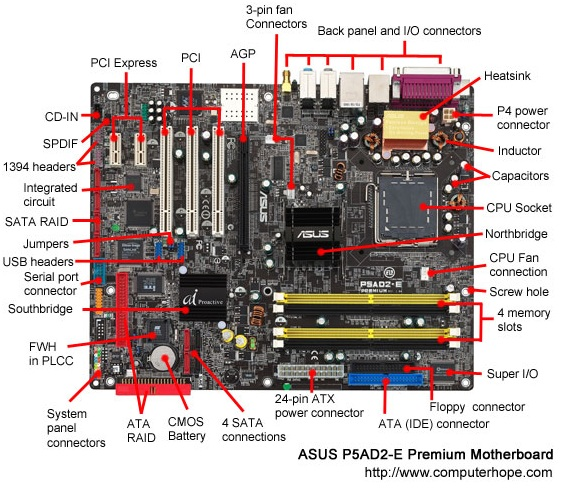

UNIDEP
JOSE MANUEL ZAVALA CARDENAS
UNIDAD 4. SELECCIÓN DE COMPONENTES PARA ENSAMBLE DE EQUIPOS DE CÓMPUTO.
CHIPSET
El chipset es el conjunto de chips que se encarga de controlar algunas funciones concretas del ordenador, como la forma en que interacciona el microprocesador con la memoria o la caché, o el control de los puertos y slots ISA, PCI, AGP, USB. down.
El chipset de una placa base es un conjunto de chips cuyo número varía según el modelo y que tiene como misión gestionar todos los componentes de la placa base tales como el micro o la memoria; integra en su interior las controladoras encargadas de gestionar los periféricos externos a través de interfaces como USB, IDE, serie o paralelo.
Volver
Funciones del chipset:
El chipset es el encargado en enviar y recibir información a cada uno de los elementos que conforman a una placa madre, es decir al procesador, memoria, buses de datos, entre otros más.
Es justamente así que el chipset trabaja con cada uno de los elementos de una placa madre, ayudándose para ello de dos puentes que le sirven de mucho en cada función. Así por ejemplo el chipset tiene un puente norte y un puente sur, mismos que tienen sus determinadas áreas de manejo y control, pero que a la final acaban comunicándose con su centro que es el chipset.
En el chipset se almacena toda la información que contiene una placa madre las características de la misma tales como el tipo de memoria que debe de ser instalada en dicha placa así como la capacidad máxima que esta puede aceptar tanto en la velocidad del procesador como del tipo de memoria RAM a implementar.
Puerto norte & Puerto sur
NORTHBRIDGE: También llamado “puente norte”, siempre fue calificado como el chip principal del conjunto, y el fundamental para el rendimiento del equipo, ya que es el que se encarga de intercomunicar a los dispositivos más rápidos de toda computadora estándar: el procesador, la memoria RAM y el puerto AGP.
SOUTHBRIDGE
Se encarga de controlar un gran número de dispositivos. Las funciones principales, y comunes en todos los chipset actuales, son el bus PCI, los puertos IDE y USB, y un adaptador de sonido. En realidad, internamente todos estos dispositivos están conectados al bus PCI.

Clases de chipset
VIA (Apoyos) Unos chipsets bastante buenos, se caracterizan por tener soporte para casi todo lo imaginable aunque suelen ser algo más lentos que éstos al equiparlos con micros Intel.
CPU
UCP o procesador, interpreta y lleva a cabo las instrucciones de los programas, efectúa manipulaciones aritméticas y lógicas con los datos y se comunica con las demás partes del sistema. Una UCP es colección compleja de circuitos electrónicos. Cuando se incorporan todos estos circuitos en un chip de silicio, a este chip se le denomina microprocesador. La UCP y otros chips y componentes electrónicos que se ubican en un tablero de circuitos o tarjeta madre.
CONTROLADOR DEL BUS
El controlador del bus se encarga de la frecuencia de funcionamiento y las señales de sincronismo, temporización y control. Está ubicado en un chip en la placa base. El Bus es la vía a través de la que se van a transmitir y recibir todas las comunicaciones, tanto internas como externas, del sistema informático.El bus es solamente un Dispositivo de Transferencia de Informaciónentre los componentes conectados a él, no almacena informaciónalguna en ningún momento. Los datos, en forma de señal eléctrica,sólo permanecen en el bus el tiempo que necesitan en recorrer la distancia entre los dos componentes implicados en la transferencia.
PUERTOS DE E/S
PUERTO PARALELO
El puerto paralelo (protocolo Centronics) se utiliza generalmente para manejar impresoras. Sin embargo, dado que este puerto tiene unconjunto de entradas y salidas digitales, se puede emplear para hacerprácticas experimentales de lectura de datos y control de dispositivos. Un puerto paralelo es una interfaz entre un ordenador y un periféricocuya principal característica es que los bits de datos viajan juntosenviando un byte (8 bits) completo o más a la vez. Es decir, seimplementa un cable o una vía física para cada bit de datos formandoun bus.
PUERTO PS/2
El puerto PS/2 toma su nombre de la serie de ordenadores IBM Personal System/2 en que fue creada por IBM en 1987, y empleada para conectar teclados y ratones. Muchos de los adelantos presentados fueroninmediatamente adoptados por el mercado del PC, siendo este conectoruno de los primeros. La comunicación en ambos casos es serial (bidireccional en el caso delteclado), y controlada por micro-controladores situados en la placa madre.
PUERTO COM
Un puerto serie o puerto serial es una interfaz de comunicaciones de datos digitales, frecuentemente utilizado por computadoras y periféricos, en donde la información es transmitida bit a bit enviando un solo bit a la vez,en contraste con el puerto paralelo que envía varios bits simultáneamente. La comparación entre la transmisión en serie y en paralelo se puedeexplicar con analogía con las carreteras. Una carretera tradicional de un sólo carril por sentido sería como la transmisión en serie y una autovía con varios carriles por sentido sería la transmisión en paralelo, siendo loscoches los bits.
PUERTO USB
El diseño del USB tenía en mente eliminar la necesidad de adquirir tarjetas separadas para poner en los puertos bus ISA, PCI o PCI Express, y mejorar las capacidades plug & play permitiendo a esos dispositivos ser conectados o desconectados al sistema sin necesidad de reiniciar.
CONTROLADOR PROGRAMABLE DE INTERRUPCIONES 8259
Este circuito integrado controla las interrupciones del sistema. Como el Micro-procesador sólo posee dos entradas de interrupción, y puedecontrolar muchas más, es necesario algún integrado que no permitaello. El 8259 cumple este propósito.
Controlador de DMA.
El mecanismo de acceso directo a memoria está controlado por unchip específico, el DMAC (“DMA Controller”), que permite realizar estos intercambios sin apenas intervención del procesador. En los XT estaba integrado en un chip 8237A que proporcionaba 4 canales de 8 bits (puede mover solo 1 Byte cada vez); sus direcciones de puerto son 000–00Fh. Posteriormente en los AT se instalaron dos de estos integrados y las correspondientes líneas auxiliares en el bus de control.
El Circuito de temporizador y control:
Es una red secuencial que acepta un código que define la operaque se va a ejecutar y luego prosigue a través de una secuencia de estados, generando una correspondiente secuencia de señales control.
Estas señales de control incluyen el control delectura - escritura y señales de dirección de memoria válida en el busde control del sistema. Otras señales generadas por el controlador se conectan a la unidad aritmética - lógica y a los registros internos del procesador para regular el flujo de información en el procesador y desde, los buses de dirección y de datos del sistema.
Controladores de video.
Un controlador de vídeo o VDC es un circuito integrado que es el principal componente de un generador de señal de vídeo, un dispositivo encargado de la producción de una señal de vídeo en informática o un sistema de juego. Algunos de Desarrollo de Aldea también generar una buena señal, pero en ese caso no es su función principal.
Entrada/ Salida.
Fragment Styles
There's a few styles of fragments, like:
grow
shrink
roll-in
fade-out
highlight-red
highlight-green
highlight-blue
current-visible
highlight-current-blue
Almacenamiento.
Fuente de alimentación.
Fuentes de almacenamiento configuradas
La serie MVP es la familia más versátil de fuentes de alimentación de potencia media que utiliza componentes magnéticos de SMD y convertidos DC-DC internos, combinados con módulos PFC, que pueden ser configurables desde 1 hasta 10 tensiones de salida con valores entre 2 y 60 v. tiene todas las homologaciones de seguridad necesarias y es un producto marcado “CE”.
Ambientes de servicios.
El negocio de proveer servicios de datos es mucho más complejo que la forma en la que se dan los tradicionales servicios, que con frecuencia se terminan involucrando o necesitando la colaboración de terceras empresas
1. Desarrollo de nuevos mercados y productos
2. Adquisición y administración de clientes
3. Proveer y desarrollar servicios para la red
4. Administración del negocio
Comercio electrónico.
Se considera “Comercio Electrónico” al conjunto de aquellas transacciones comerciales y financieras realizadas a través del procesamiento y la transmisión de información, incluyendo texto, sonido e imagen.